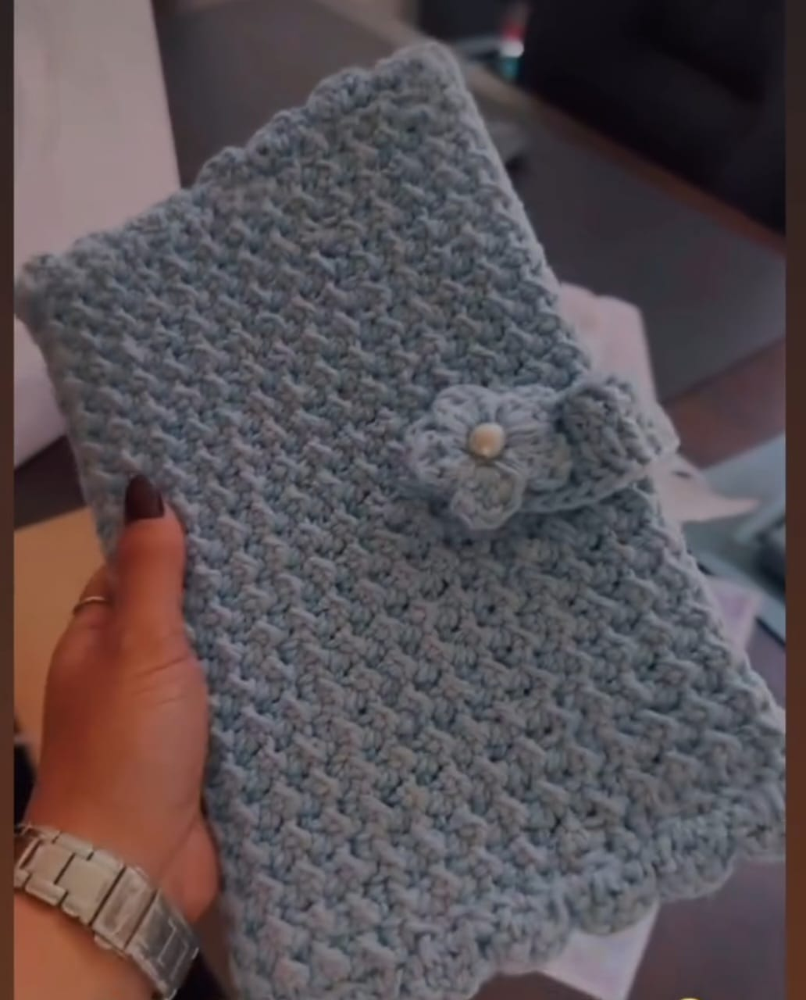
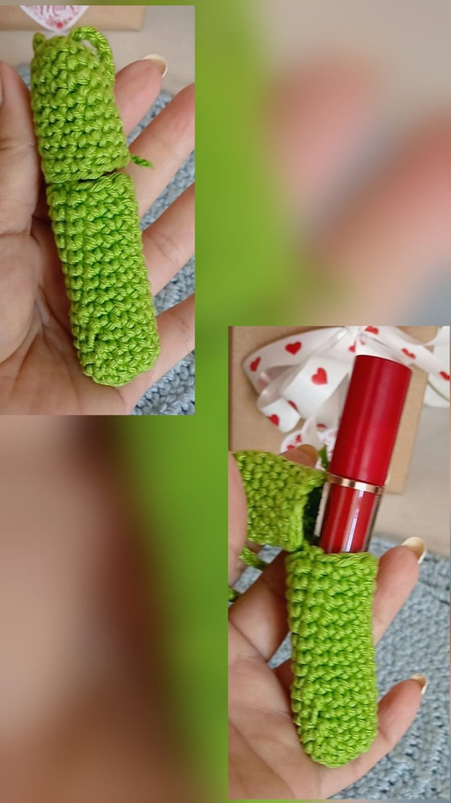
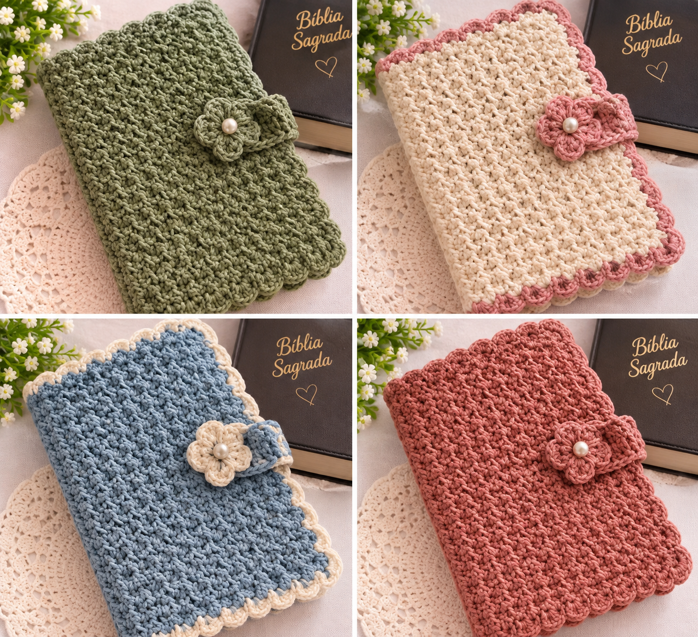

ARTESANATO COM ALMA
Peças únicas,
feitas com amor
Na As três Yandis, cada peça carrega o carinho de uma mãe e de suas duas filhas, unidas pela criatividade e pelo desejo de transformar fios e tecidos em algo especial.
Conheça nossos produtos Feito à mão.
Feito à mão.Com amor. ♡
FEITAS PARA ENCANTAR
Explore nossas criações
Peças artesanais feitas com carinho para acompanhar você em todos os momentos.
Feito à mãoCom carinho e dedicação
Peças especiaisCriações cheias de personalidade
Compra acolhedoraAtendimento com atenção
ESCOLHAS COM CARINHO
Produtos em destaque
Encontre uma peça especial para você ou para presentear.


Proteção da Palavra
Uma peça artesanal feita com amor para acompanhar e envolver a Palavra de Deus.
Tenho interesse →
Preços e disponibilidade sob consulta. Novos modelos serão incluídos em breve.
FEITAS À MÃO COM AMOR
Nossas Bolsas
Modelos únicos, feitos com carinho para acompanhar você.
← Voltar aos produtos em destaque


Preços e disponibilidade sob consulta. Consulte os modelos disponíveis.
FEITOS À MÃO COM AMOR
Nossos Tapetes
Texturas e cores que levam aconchego para sua casa.
← Voltar aos produtos em destaque

Preços e disponibilidade sob consulta. Consulte as opções de cores.
PEQUENOS DETALHES, MUITO AMOR
Acessórios
Peças delicadas e artesanais para presentear e encantar.
← Voltar aos produtos em destaque



Porta Cartões multiuso
Praticidade e charme para guardar cartões de visita, cartões de transporte e outros cartões do dia a dia.
Tenho interesse →
Porta-Retrato
Capas artesanais em diferentes cores, feitas à mão com carinho para proteger sua Bíblia e acompanhar seus momentos de fé com beleza e delicadeza.
Tenho interesse →

Chaveiros Artesanais
Pequenos detalhes feitos à mão, com charme e delicadeza, perfeitos para decorar chaves, bolsas ou presentear alguém especial.
Tenho interesse →
Porta-Retrato
Uma peça versátil e feita à mão, ideal para organizar pincéis de maquiagem, canetas, lápis e outros pequenos objetos, unindo praticidade e delicadeza.
Tenho interesse →Preços e disponibilidade sob consulta. Consulte nossos modelos.

SOBRE AS TRÊS YANDIS
Mais que artesanato,
somos uma família.
Somos três mulheres, mãe e filhas, unidas pela criatividade e pelo carinho pelo trabalho manual. Cada criação é uma oportunidade de transformar fios e tecidos em peças cheias de significado.
Nosso propósito é valorizar o feito à mão e compartilhar a beleza dos pequenos detalhes.
Venha conversar conosco